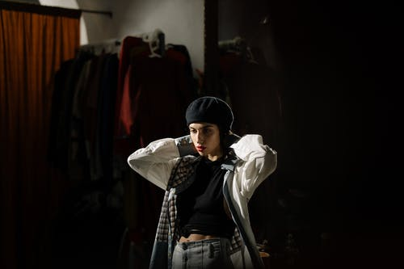

Ropa Exclusiva
Sobre este tema, siempre me gusta mencionar el cambio que ha experimentado la sociedad
china. España
siempre ha sido uno de los países preferidos por los turistas de origen chino para hacer sus
compras de
marcas occidentales. Sin embargo, en los últimos años, los ciudadanos chinos están apostando
más por
buscar exclusividad, y a eso no se refiere el pagar miles de euros por una prenda
internacional, ahora
apuestan y buscan diseño entre sus diseñadores locales. Una muestra de ello es cómo los
estudiantes
chinos que se han formado en prestigiosas escuelas de moda en Londres o París, al terminar
sus estudios
vuelven a China y abren sus talleres de moda. La ropa exclusiva ya no incluye simplemente
marcas
internacionalmente conocidas, los consumidores de moda buscan personalización, originalidad,
diseño, y
en definitiva, sentir que la prenda de ropa que llevan es simplemente única.
Por poneros otro ejemplo, Celia Bernardo, fundadora española de la marca Celia B, empezó su
carrera como
diseñadora en Shanghai. A través de la entrevista que me concedió hace unas semanas en el
Paracaidista
en Madrid, comentó cómo la sociedad china invierte en moda local y no pestañea al gastarse
grandes
cantidades de dinero para adquirir diseños únicos.
Según mi forma de entender moda y ropa exclusiva también entiendo el huir de lo que hoy en
día se llama
“fast fashion”, o más comúnmente entendida como aquella ropa que sigue determinadas
tendencias y que
está de moda hoy, pero la semana siguiente se lleva otra prenda de ropa. Es decir, un poco
lo que sería
lo que venden grandes marcas de ropa “low cost”, ropa que cuesta poco dinero y que te
permite comprar
constantemente nuevas prendas.
La ropa exclusiva, en mi opinión, está enfocada a encontrar nichos, es decir, a aquellos
compradores que
seguramente tengan un determinado poder adquisitivo y que entiendan el concepto de moda de
otra forma:
no se valora simplemente una marca, un precio o una tendencia, sino una originalidad,
calidad o diseño
auténtico. La moda exclusiva no tiene porqué tener unos precios disparatados, pero tampoco
estará a
precios “low cost”.
|

Asesoramiento y mas..
Los asesores de imagen ayudan a sus clientes a sacar el máximo provecho de su aspecto, para
que se
sientan bien y seguros de sí mismos. También muestran a la gente cómo crear una buena
impresión a partir
de su forma de hablar o de comportarse, por ejemplo.
Los clientes suelen acudir a un asesor de imagen en un momento de su vida determinado,
cuando quieren
ayuda o consejo sobre su imagen. Por ejemplo, es posible que deseen crear una buena
impresión con el fin
de conseguir un nuevo trabajo o ganar un ascenso, quizá acuden al consultor antes de casarse
o porque
quieren encontrar una nueva pareja, o cuando han perdido peso y no saben qué ropa usar.
El asesor de imagen analiza la imagen del cliente, incluyendo:
La ropa.
Su apariencia personal en general.
Su cabello, los ojos y el tono de la piel.
Su cara y la forma del cuerpo.
A continuación, el asesor de imagen asesora al cliente sobre los estilos, colores y diseños
de ropa que
se adaptan mejor a él, teniendo en cuenta su personalidad, el presupuesto del que dispone y
su estilo de
vida. También podrían asesorarle sobre aspectos tales como:
Estilo y color de pelo.
Tonos de maquillaje.
Accesorios y tipos de jersey (con o sin cuello alto, por ejemplo).
Tipo de zapato y altura del talón.
Longitud de las chaquetas.
El asesor de imagen se informa sobre la ropa que hay en el armario del cliente, y le
aconseja sobre las
prendas que le favorecen y las que no. También puede llevarle de compras, para asesorarle a
la hora de
comprar ropa nueva y cambiar su vestuario.
El asesor de imagen debe aconsejar al cliente para que se vista de acuerdo con las últimas
tendencias,
sino mostrarle qué tipo de ropa y estilo le favorece más en función de su altura,
constitución y la
edad, por ejemplo.
|